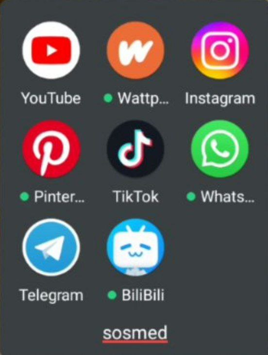
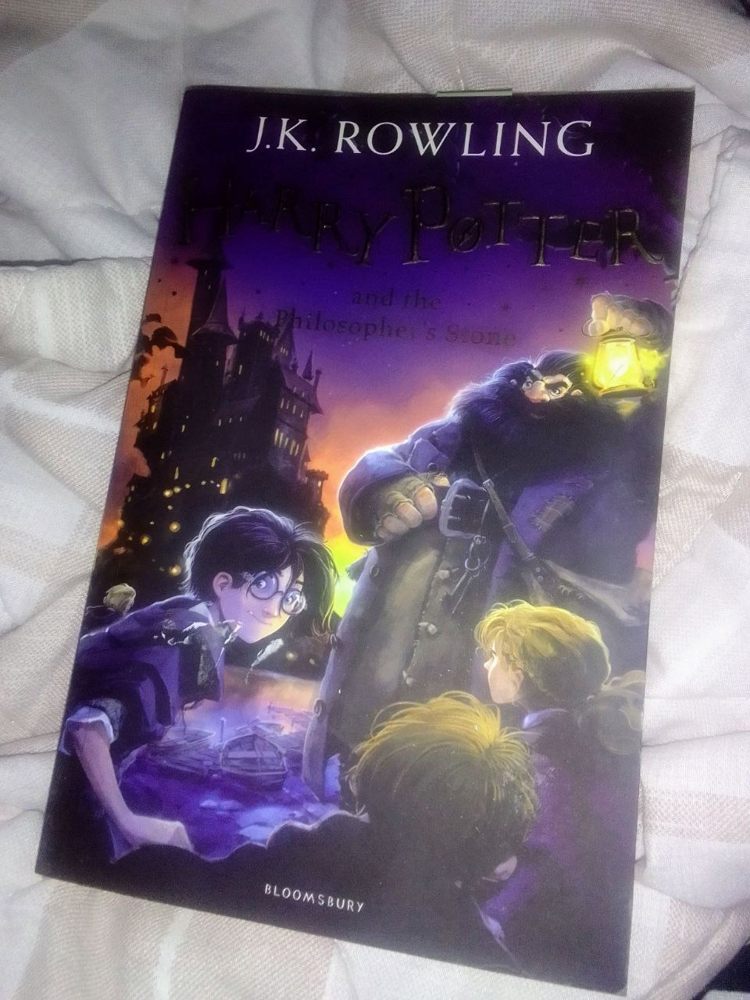
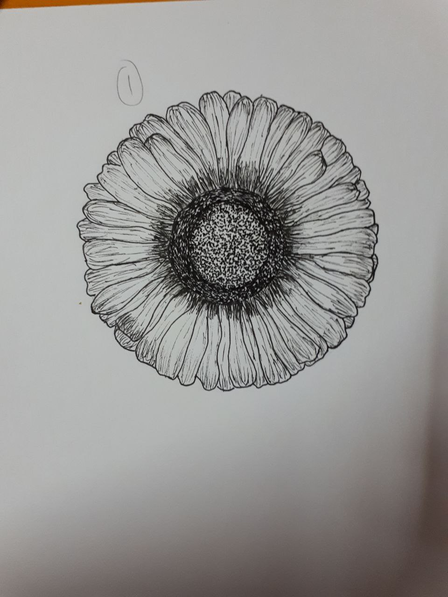
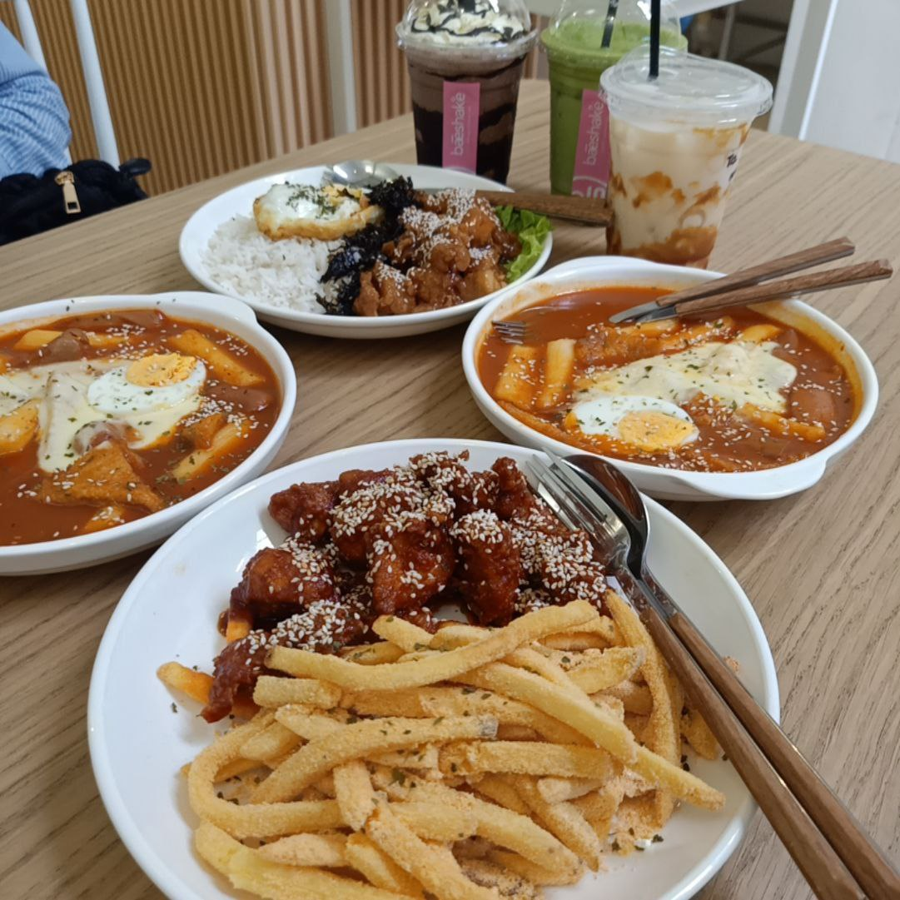

|  | One of my favorite hobbies is using social media, especially WhatsApp and Telegram, to send messages and connect with people. I also enjoy using apps like YouTube and BiliBili to watch videos. I spend a lot of time watching TikTok (honestly), but I also use these apps to find important information. Additionally, I enjoy reading books online using applications like Wattpad or Ao3. |
|  | Since I was young, I have always loved reading books. Although it's unrelated to education, I enjoy reading novels, comics, and magazines. I used to buy books and spend the whole day reading them. However, I need to reduce this hobby to focus on my studies. Nevertheless, I continue my hobby by reading books online. But physical books are still my preferred choice. |
|  | From the time I entered primary school, I have been interested in drawing. Initially, I wasn't really fond of it, but because my friends were into drawing, I decided to give it a try. Surprisingly, I found that I enjoy drawing, even though sometimes my work doesn't turn out as expected. When I was in Form 4, I chose the art stream. Even now, I still love to draw, although I don't have much time to pursue this hobby. |
|  | The hobby that consumes the most money but is also very satisfying is food hunting. I really enjoy food and can eat almost anything (except vegetables). My parents also enjoy buying a variety of foods for us at home. Since starting university, I have the freedom to go anywhere (my parents used to be strict). My friends share the same interests, so we often go out to eat at different places and try new foods together. |